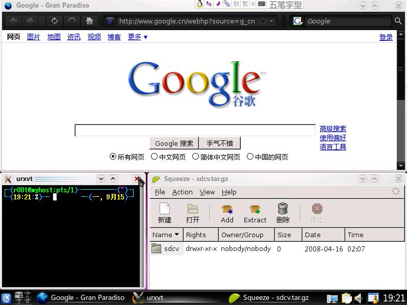

第 38 章 awesome
目录
Tiling window manager
Tiling window manager，直译为“瓦片窗口管理器”[84]，意译为“平铺式窗口管理器”。
假设你需要同时监视多个程序的状态并进行操作，你就需要不停的按Alt+Tab切换，但是这会加速 Alt 尤其是 Tab 的磨损[85]。
无奈之下，你可能会这样作：

用鼠标拖放成这样，绝对不是一件愉快的事，而且各个窗口的大小可能不太合适，窗口之间可能会有点缝隙，虽然不漏风，但是也影响注意力……
而在平铺式窗口管理器中，无论打开多少个窗口，都会把整个屏幕占满，不留一点儿缝隙(如果只有一个窗口，直接全屏)

窗口没有标题栏（标题在状态栏上），边框尽可能的窄（可设置为0），最大程度的节约了桌面空间，如果你的显示器比较大，或者有多个显示器，平铺式窗口管理器将是不二之选

常见的平铺式窗口管理器有： awesome、xmonad、dwm、wmii、ion、ratpoison、larswm 等， 推荐使用 awesome
[84] 像屋顶的瓦片一样平铺开来
[85] 手的磨损忽略了，因为它是可再生的
优点
awesome 有以下优点：
稳定、快速、简单
专注于效率
不需要为码放窗口分心，不需要在多个窗口间来回切换，不需要经常把手挪开使用鼠标
完全的键盘控制
在普通的窗口管理器中，完全键盘控制是不现实的，因为调整窗口位置无论如何要用鼠标。
强大、灵活的配置文件
使用 Lua 脚本作为配置文件使得它的灵活性非常高
支持多种窗口布局
多显示器支持
操作
awesome 中，所有的操作都可以用快捷键完成：
| 打开终端 | Mod4 + Return | |
| 运行命令 | Mod4 + F1 | |
| 关闭当前窗口 | Mod4 + Shift + c | |
| 重启awesome | Mod4 + Control + r | |
| 退出awesome | Mod4 + Shift + q | |
| 重绘当前窗口 | Mod4 + Shift + r | |
| 窗口间切换 | Mod4 + j | Mod4 + k |
| 标签间切换 | Mod4 + Left | Mod4 + Right |
| 切换到标签 | Mod4 + [1-9] | |
| 屏幕间切换 | Mod4 + Control + j | Mod4 + Control + k |
| 切换布局 | Mod4 + space | Mod4 + Shift + space |
| 切换为浮动窗口 | Mod4 + Control + space | |
| 调整窗口位置 | Mod4 + Shift + j | Mod4 + Shift + k |
| 调整列大小 | Mod4 + h | Mod4 + l |
| 调整主区窗口数量 | Mod4 + Shift + h | Mod4 + Shift + l |
| 调整辅区窗口数量 | Mod4 + Control + h | Mod4 + Control + l |
配置
awesome 全局配置文件为 /etc/xdg/awesome/rc.lua，用户配置文件为 ~/.config/awesome/rc.lua，以下是一些配置选项：
例 38.1. awesome 配置
-- 主题文件。awesome的主题非常简单，只需要指明几个颜色就可以了
theme_path = "/usr/local/share/awesome/themes/default"
-- 设置默认终端
terminal = "urxvt"
-- Mod4 对应“Win”键，可以改成其它的
modkey = "Mod4"
-- 不保留窗口间的缝隙
c.honorsizehints = false
-- 默认使用浮动窗口的程序
-- 在awesome下用Mod4 + Ctr + i 查看当前程序的instance和class名称
floatapps =
{
["MPlayer"] = true,
["gimp"] = true,
["smplayer"] = true,
["mocp"] = true,
["Codeblocks"] = true,
-- 各种对话框
["Dialog"] = true,
-- firefox 的下载窗口
["Download"] = true,
["empathy"] = true
}
-- 程序启动时自动发送到某个屏幕的某个tag里
apptags =
{
["smplayer"] = { screen = 1, tag = 7 },
["amarokapp"] = { screen = 1, tag = 8 },
["VirtualBox"] = { screen = 1, tag = 9 },
["Firefox"] = { screen = 1, tag = 1},
["Thunderbird-bin"] = { screen = 1, tag = 7 },
["Linux-fetion"] = { screen = 1, tag = 6 },
}
-- 显示时间
-- 默认显示的是从1970年1月1日到现在经过了多少秒
-- 查找awful.hooks.timer.register这一行，改为如下配置
awful.hooks.timer.register(1, function ()
mytextbox.text = " " .. os.date() .. " "
end)